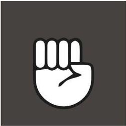
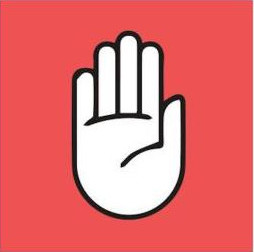
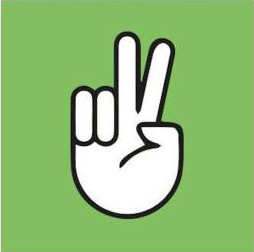

Créer une liste avec trois éléments (Pierre, Feuille, Ciseaux). Ajouter un bouton « Shifumi ! ». Lorsque l'on clique sur « Shifumi ! », choisir un élément au hasard (Pierre, Feuille ou Ciseaux). Le comparer à l'élément choisi par le joueur pour voir qui a gagné entre l'humain et la machine. Bonus : Ajouter un compteur de victoires et de défaites et afficher le pourcentage de victoire contre l'ordinateur.
Choisissez l'arme de votre choix et affrontez le hasard de l'ordinateur...
  